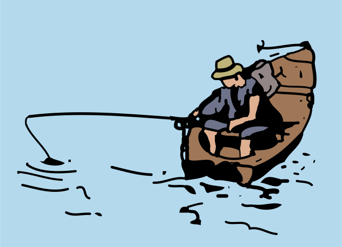
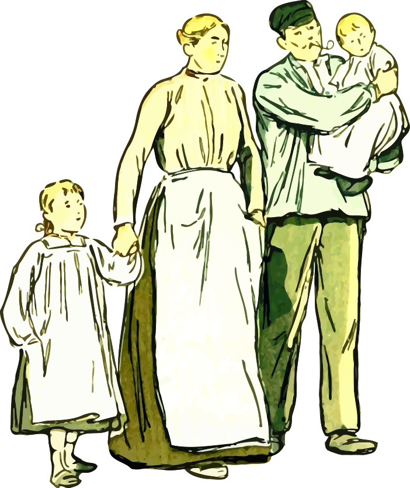
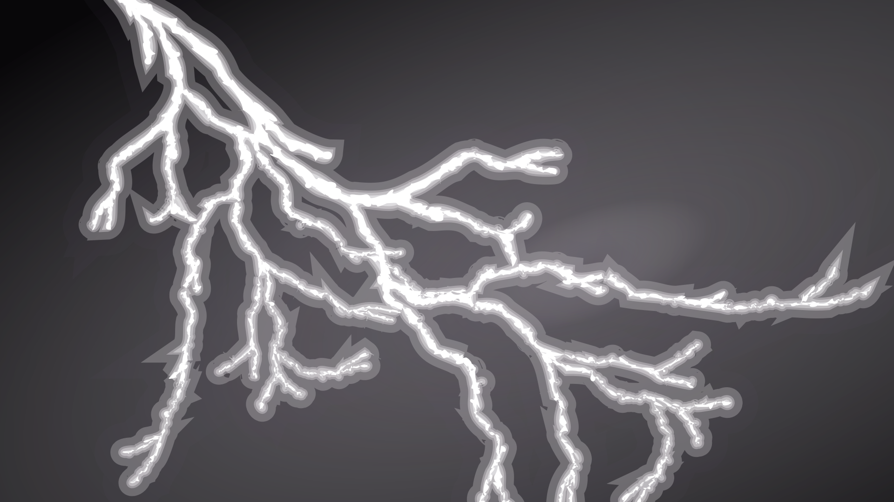

The meaning of "táltos" is something like mage/shaman in Hungarian mythology
according to my sources, the person - Göncöl - only appears in Csallóköz
(Hungarian part of Slovakia, huge island of Danube), however I find it possible, that he was known
Through the whole country.
Few fragments remained about him, I am trying my best to collect all I find here.
Göncöl was a táltos(shaman/mage), who had incredible skills, including:
Seeing the future
Speaking with birds and other animals
Understanding the whisper of the trees and the forests
Transport in the sky with his chariot
Controlling natural powers
Healing
Resurrecting the dead
Mind tricks (?)
Appearance
According to the elder of Csallóköz, Göncöl táltos had long white hair, and
long, dense silver beard. In his eyes Sun and Moon shines, inside him the stars.
Despite his age, he was a healthy, strong and fast paced man.
Always wore a robe that hanged to the floor, however some say, that sometimes he disguised as a shepherd or beggar,
Other times he walked without disguise among the people, when healed or punished them.
His home was on a tall mountain, to stay close to the sky.
So all in all his looks remind me a little bit
of Gandalf from Lord of the rings, that's why
I used illustration images about him and Saruman
:D
Some people say, that Göncöl táltos was the one, who invented the "coach" type of chariot itself,
since he was such a "smart" person, having skills in all kinds of science.
Proving this, it turned out that indeed "Kocsi"(Chariot, car, coach in Hun.) originates from the village
"Kocs" in Komárom county, and that's where it got spread to other languages (coach, kocz...)
,,Before the ill-soul Thomases would have a sarcastic smile, I tell it immediately,
that here I do not mean the invention of "chariot" as a whole, rather this uniquely Hungarian
"coach" type of chariot!"
Three important things about the chariot:
It was enormously massive
Animals didn't thrust it, yet it still moved
It could fly
In folklore - knowledge about these attributes of the chariot have been well known:
,,Massive, just like the chariot of Göncöl''
,,Only the chariot of Göncöl works without horses''
For the following paragraph I didn't find the source, but I will write it anyway:
The wheel axis of the chariot got broken, Göncöl got in trouble, but the people let him down.
Disappearance
Nobody has seen Göncöl die. He disappeared into the skies with his flying chariot,
this is what we (Hungarians) call nowadays the ,,Göncöl szekere" or the "Göncölszekér" constellation.
Many people own the family name - Göncöl - however it is important to know, that
Göncöl táltos didn't have offspring. - said a villager to the collector, probably to
emphasize, Göncöl wasn't just a simple mortal, and he didn't want his name mixed with
average mortal people. (However in tales we can often meet people who are "grandchildren of Göncöl...")
That being said, as Göncöl flew in the air with his chariot, flies the same way up there too,
and escorts the dead to the heavens.
(At this point he feels almost like a demigod, thus some people identified him as
God of all Hungarians, but I think most people rather think of him as a powerful mage.)
Göncöl Táltos in folk tales
Unfortunately I have only found few of these tales, however my sources
mention several such tales even with titles and quotes.
So I will write here anything I find about him, be it just a fragment of a tale,
or a greater scaled story. If anyone finds a story about Göncöl, please contact me.
,,Another tale"
If at night we turn our faces towards where the sun never appears, we'll see a not too small,
not too big, but bright star. This star never moves from its place, because this is not a star,
rather a stone statue(pillar) digged to the ground.
Not too far from it, there are two stars
Indeed, but only the uninitiated may consider them stars.
these are not stars, but grazing táltos-horses, which have been tied here by the great grandfather of Göncöl.
Then he said this to his grandchildren:
— I may sleep some... When I will already have been woken up, some of you shall already have the two táltos(horses)
freed, and tie to that chariot which I have hid not too far from here in the tall grass.
The one who succeeds in this will inherit all my knowledge, all my power!
At this moment the elderly old shaman immediately fell asleep, just like in every 7000 years once.
Out of the 7 beautiful grandchildren, the oldest one tried, then the second, the third,
fourth, fifth, sixth also. But — as I said — only tried! Because any smart and brave they had been,
any well they understood horses, the eye-illuminating two táltos(horses) kicked, bit,
they didn't even let close them to themeselves.
Years, decades, hundreds, thousands of years elapsed...
6000 years elapsed, since the elderly old shaman turned his gray head towards his dreams...
And voila, the youngest of the grandchildren, Göncöl has found the golden-axis silver-axis chariot,
that had been hidden in tall, sky-grass. Assembled it in a smart way and tied 4 night-dark horses,
started turning around the white táltos(horses), until they got too tired of their endless
guard duty, and got dizzy. And then — before the 7000th year would have arrived,
Göncöl threw the night-black horses to the sky, and tied the two foam-white táltos(horses)!
And it was just about time!
The 7000th year has come, his great-grandfather has just waken up, wiping his eyes said:
— Finally I could rest myself a little!
And as soon as he said this, all the stars disappeared from the sky. Because the star-flowers
of sky are not anything else, but warriors died in battles, who now, in this moment got resurrected,
and with the resurrected warriors the shaman can do whatever he wishes!
as the soldiers are visible and invisible, as the old man wants. And no kind of weapon may damage them.
Collected by: Khín Antal
Star-walk of Göncöl táltos
[...] Göncöl is still a "pendelyes" kid. his great grandfather, a shaman king, is
illuminated by some special spiced wine. In this illuminated state he crashes to an Oak tree
with the chariot, since this is when the rod of the Göncöl chariot bent. [...]
[...] The horses which are pulling the star-chariot, got weak, it is a torture for them now,
to pull the chariot. Göncöl pierces the golden and silver flour bags, this way
making the destiny of the horses lighter, and this way giving gold to the gold-collectors of Csallóköz.
Göncöl táltos and the rabbit
[...] Göncöl while fighting in his illumination against hell forces for the Earth and its inhabitants,
everything gets dark in front of him and he cannot find the way home.
[...] However a rabbit helps him. As giving thanks, the táltos(Göncöl) puts the rabbit
on the Moon, this way it doesn't have to fear predators.
,,This can be a really interesting coincidence from before history!
since except them - The elder of Csallóköz - the south- and north American indians,
the mongols, hindus and ceylonians also think that there is a rabbit on the Moon."
Göncöl táltos [...]
The fisherman and the green man
Short summary for English speaking people:
The fisherman is fishing on the Danube, finds the Green man.
They sign a pact - give whatever is home, but you don't yet know about it, and you will get
lots of fish! The fisherman accepts the proposal, at home he finds a newborn child.
They cry a lot, until they meet the grandchild of Göncöl, who advises them to make a
necklace from the umblical cord of the kid. He shall wear it on the sacrifice day,
and it will protect them.
And so this happens, the green man - now called as water ghost - appears in the Danube again.
A huge "sky war happens", where on the sky ,,night-black silver-hair horses appear, destroying
the herd of hell.
The táltos also advises them, to never sail after midnight on the Danube again, as it is dangerous, the
"midnight fisherman" hunts for victims that time.
Régen, nagyon régen történhetett, amit most elmesélek nektek, mikor még tiszta és szabad volt a Duna, nem szennyezte , nem szorította gátak közé senki... Szép, derűs napokon olyan kék volt mindig, mintha egyenesen az égől hömpölygött volna alá... S éjszaka bársonyos, sötét vizében több csillag fürdött, mint az égen...
Szerettük a folyamunkat, s ő is szeretett bennünket. Nekünk adta minden kincsét, s mi is megosztottuk vele búnkat, örömünket... A csendes Duna-ágak varázstükre azóta is híven őrzi a csallóközi tündérek és az ősök istenéhez hű elődeink képét, már évszázadok óta...
Élt akkoriban a Duna partján egy halász meg szép fiatal felesége. Ha azonban valaki azt hiszi, hogy csak ketten voltak, igen nagyot téved, mert annyi gyerekük volt, hogy talán még ők maguk sem tudták, hogy mennyi! És minden évben gyarapodott a család... Minél többen lettek, annál több volt házuk táján az öröm és boldogság...
- Megsegít bennünket az Öregisten, no meg az Öreg-Duna! - ezzel felelt a derék halász, ha valaki sajnálkozni próbált rajta a szaporaság, a szakadatlan gyermekáldás miatt. - Amíg elég hal van a vízben, madártojás a fészekben, jóban vagyok a pásztorral, a vadásszal és a molnárral, addig nem kell félnem a holnaptól!...
Reggeltől napestig, de néha még éjszaka is járta a vizet, és mindig kedvezett neki a szerencse. Egyszer többet, máskor kevesebbet fogott, de sohasem maradt üresen a hálója... Igaz ugyan, hogy tenyerét megkeményítette az evező meg a háló kötele, de sohasem panaszkodott, sohasem mondta, hogy fáradt, mindig énekszóval tért haza. Felesége és gyerekei már messziről meghallották, amint vidáman nótázott és szaladtak ki eléje a partra... ő meg énekelte:
Én vagyok a halászlegény,
én járok a víz tetején...
Aranyosi patak alatt
én fogom az aranyhalat...

Így éltek ők, sokacskán és egyre töbecskén, boldogságban és békességben, elégedetten hosszú-hosszú évekig, de még csak a múló idő sem fott ki rajtuk, a munka sem öregítette őket, hiszen mindig örömmel és zokszó nélkül végezték feladatukat...
De egyszer aztán fordult a világ. A mi halászunkat cserbenhagyta a szerencséje: messzire elkerülték hálóját a halak!... Teltek a napok, a hetek egymás után, és ha jó barátaik nincsenek, bizony alaposan bekvártélyozta volna hozzájuk magát az ínség. Hej, nem is volt kedve nótázásra a derék embernek, s ha mégis dalra fakadt, akkor igen-igen szomorú volt a nótája. A szíve is elfacsarodott tőle annak, aki meghallotta. Leggyakrabban ezt a bús nótát énekelgette:
Három hete, hogy a Dunát halásztam,
Könnyeimtől egy csöpp vizet nem láttam.
Kifogtam a kedves rózsám kendőjét,
Kék selyemmel rávarrattam a nevét.
Úgy bizony, ilyen és csak ehhez hasonló nótákat fújt el a szegény nagy keservében... Soha senkinek nem ártott, lám mégis akadtak irigyei, már ahogyan ez a szerencsésebb emberek esetében lenni szokott.
Közülük is a legrosszabb volt a szomszédasszony, aki hányszor köszörülte rajtuk gonosz nyelvét, bocsásson meg neki az Öregisten, ha megérdemli! Ha szomorú nótával sírta bánatát a halász, akkor kárörvendően mondogatta a hozzá hasonlóknak:
-Úgy köll neki! Miért csinált annyi gyerekecskét!
Ha pedig hallgatott a halász, akkor meg ezzel traktálta őket:
-Most bezzeg hallgat, mint csík a varsában!
Szerencsére nem voltak sokan az ilyen gonoszkodók... Egy este a halász már hazafelé fordította a ladikja orrát, s közben így fohászkodott:
-Hej Öregisten, Öreg-Duna, ha ti nem, akkor ugyan ki segíthet rajtunk? Erre, mintegy varázsszóra, felbukkant a hullámokból a zöld ember, és így szólt az ámuldozó halászhoz:
-Ha ők nem is segítenek, én bizonyára segíthetek rajtad, te szegény halász... De csak akkor, ha szót értünk egymással...
Fura egy teremtmény volt a zöld ember, talán inkább az ördögé, mint az Öregistené, s bárki más emberfia halálra rémült volna láttán, de a mi halászunk nem ijedt meg egy cseppet sem. Látótt ő már farkaskoldust, esőcsináló garabonciást, kétfejű borjút, de még halfarkú kisasszonyt is a saját két szemével.
-Igazat szólsz-e? - kérdezte bátran
-Igazat bizony! - mondta a zöld ember. - De nehogy azt higgyed, hogy ingyen teszem, mert az én szívemet ugyan nem lágyíthatod meg bánatos dalaiddal... Ha nekem adod azt, ami a házadban van, de te nem tudsz róla, azután mindig szakadásig tele lesz a hálód!
-Olyan az én házamban, amiről nem tudok?!... Hát az ugyan mi lehetne?... És ha ezután sem tudom meg, akkor mi lesz?- kérdezte a halász.
-Ne félj, gondom lesz rá nekem, hogy idejében megtudd! - hangzott a rejtélyes válasz.
Gondolkozott erősen a halász, ugyan mi is lehet az, ami a házában van, de ő nem tud róla?... Ha van is ilyen, csak valami kicsiség lehet... - Hát, ha csak ez a kívánságod, rajtam igazán ne múljék! Akár kezet is adhatok rá - mondta ki végre.
-Esküdj az Öregistenre, hogy pontosan mához egy évre elhozod nekem ide azt, amiben megalkudtunk!
-Esküszöm!... De most aztán te is álld ám a szavad, különben érvénytelen az alku!
-Vesd ki csak a hálód, aztán majd meglátod, mi lesz! - vágta el a vitát a titokzatos zöld ember, és ezzel már el is tűnt a halász szeme elől. Az bizony nem sokat töprengett, s nemsokára hallal teli ladikkal kötött ki a parton. Dalolásra azonban most sehogy sem volt kedve, nem úgy mint máskor...
Hiába tért haza gazdag zsákmánnyal, valami igen-igen rosszat sejtett! S lám, otthon a felesége egy sivalkodó újszülöttel a karján fogadta a hazatérő férjét. Arcán boldog mosollyal mondta:
- Nézd, ismét megajándékozott egy szép, egészséges fiúgyermekkel az Öregisten.
Amikor a férje arcán kétségbeesést, s nem örömet látott, rémülten megkérdezte:
-Mi történt veled?

A halász pedig elmondta találkozását a zöld emberrel, azt is, hogy milyen meggondolatlan ígéretet tett neki, csak azért, hogy végre ismét hal legyen a hálójában... Hogy tele hálót húzzon ki megint... Talán újból jobb napok köszöntenek ránk - sóhajtotta - , de hát milyen áron?!...
Telt, múlt az idő, a kisfiú megnőtt, növekedett annak rendje és módja szerint. Gügyögése, kacagása azonban csak még bánatosabbá tette szülőit. Hiszen gondolni sem tudtak másra, csak arra a végzetes időpontra, amikor egyéves korában a gyönyörű gyermeket át kell adniuk a gonosz zöld embernek...
Bánatuk okát hamarosan megtudta a szomszédság meg az egész környék, s a jó emberek együttérzően velük búslakodtak, de segíteni nem tudott rajtuk.
-Igaz, sok náluk a gyerek, talán még több is a kelleténél, de hát mindig az a hal volt a legszebb, amelyik kiugrott a hálóból - mondogatták sajnálkozva.
Egyszer aztán meglátogatta a halászt az apósa. Öreg, nagyon reszketeg ember volt már, időt jósolt annak már minden csontja, minden porcikája, de minden szava felért egy aranytallérral. Amikor panaszolták neki szomorúságuk okát, rövid töprengés után így szólt:
- Jól figyelj ide, fiam! Az Amadé-réten lakik egy időtlenül öreg csikós... Már akkor is öreg volt, amikor én még pendelyes gyerkőcöcske voltam, de öregnek ismerte már a nagyapám is... Azt beszélik róla, hogy Göncöl táltos unokája ő! Neki magának is táltos hírét költik, mert már nagyon sok bajba jutott becsületes emberen segített... A helyedben én rögvest fognám magam, és tőle kérnék tanácsot... Ha ő nem tud, akkor már igazán senki nem segíthet a bajotokon!
- Igaza van, apámuram! - csillant fel a halász szeme. - Én is hallottam már róla ilyet rebesgetni!
Mindjárt másnap reggel pirkadatkor el is indult - csak úgy gyalogosan - az Amadé-rétre... Bizony, késő délutánra fordult már az idő, amire megtalálta a táltos kunyhóját. Előtte ült egy csökön az időtlenül öreg bölcs, és gondolataiba merülve eregette a füstöt. Föl sem nézett látogatójára, már sorolta is:
- A szemveréstől, igézéstől óv a tisztesfű... A váltott gyereket megismerteti a kakukkfű...
Mondta, csak mondta az öreg a bölcs tanácsokat, majd végre elhallgatott és felpillantott a türelmesen várakozó halászra:
-Tudom én, fiam, nagyon jól tudom, miért jöttél el hozzám, de azért csak mondd el inkább te magad, mert jót tesz az embernek a bajban, ha kibeszélheti magát... Látom én, hogy jóféle vagy, az eszed is forog, ha megkened, s te még nem bökdösted meg a szelet a vasvellával, mint a dercsikai ember... Vedd le a kalapod, ereszd ki alóla a szelet, és ülj le ide mellém, mert biztosan elfáradtál!
A halász töviről hegyire elmondta a bölcs beszédű öregnek családjuknak búját-baját. Az meg egy darabig csak pöfékelt, majd így szólt:
-Szerencséd, hogy még idejében hozzám jöttél tanácsért!... Pont dióverő vásár után lesz egyéves a fiad... Aztán eltettétek-e a gyerek köldökzsinórját?
- Biztosan! a feleségem eddig minden fiúgyermekét eltette!
Akkor semmi baj, fiam! A köldökzsinórt varrja bele halcsont tűvel egy darab fehérített vászonba és annak a napnak estéjén, amikor pontosan éjfélkor találkoznod kell a víziszellemmel, vagyis a zöld emberkével, akassza a gyermek nyakába... Aztán csak bátran evezz be a gyerekkel a Duna közepére, és várj! Bármi lesz is, ne aggódj, semmi bajotok nem történhet!... Ha pedig minden úgy lesz - márpedig úgy lesz -, ahogy most mondom, hozol nekem néhány szép halat... Ha akkor még nem dobálnak diót a csontjaimmal... És adok neked még egy tanácsot:
Vigyázz arra, hogy az után soha ne találjon a Dunán az éjfél, mert mindig akkor jár az éjféli halász, aki maga a fiaördög!... És most menj, fiam, segéljen benneteket az Öregisten!...
Boldogan ment haza a halász, szentül megfogadva az öreg táltos minden szavát. Hiszen tudta ő régóta, még a nagyanyjától, s a felesége is tudta jól, hogy bűvös ereje van a fiúgyerekek leszáradt köldökzsinórjának, s aki a nyakában viseli, azt nem fogja semmiféle fegyver... De azt csak most tudta meg, hogy még a gonosz viziszellem ellen is védelmezi viselőjét!
Telt múlt az idő, s lassan elérkezett az a nap is, amikor a megállapodás szerint át kellett adnia a gyermeket a viziszellemnek. Fohászkodtak hát egy nagyot, a fiúcskának a nyakába akasztották a kis tasakot, aztán a halász bátran beevezett vele a Duna kellős közepére, a Lidia-zátony fölött... Göncöl szekere hamarosan megfordult a csillagporos égen...
Pontosan éjfél volt! S e szempillantásban már meg is jelent a gonosz zöld ember. Rémisztő hangon rivallt rá a halászra:
-Becsaptál, te halász, igaz a más eszével, de te magad látod mindjárt ennek a kárát, mert én most legyőzlek téged, igaz a más erejével! S már parancsolta is:
Szélvsész kerekedjen,
Hullám feltámadjon!
Ezerágú villám
Ladikodba csapódjon!
Hirtelen vad égiháború támadt, a villámok meg a ladik körül csapkodtak bele a vízbe...

Az eddig békésen folydogáló Duna tombolni kezdett, vadul hánykolódtak a hullámok, istentelen szélvész nyargalt végig a folyam fölött, mintha a pokol fekete ménese szabadult volna ki.
Szélvész szolgám,
Hű cselédem,
Teljesítsed a parancsom,
Teljesítsed a kérésem!
Ti mély vizek, tomboljatok,
Nyeljétek el a ladikot!
- üvöltötte a zöld ember, túlharsogva az elemek tombolásának hangját.
-Bűvös erő védi őket, megtörik hatalmam rajta! - kiáltotta a szélvész, ezt harsogta a víz is.
Ezüstsörényű, éjfekete szőrű szellemparipák vad ménese száguldott át az égen, s letiporta a pokol ménesét... Egy szempillantás alatt elült a vad vihar, elsimultak a hullámok... Mire a gyermekét féltőn ölelő halász feltekintett, az égen már újra millió csillag ragyogott, az zöld ember megfeketedett tetemét pedig vitte-vitte, sodorta a bosszúálló víz a nagy örvény fele...
-Megmenekültünk! - rebegte a halász, és kezébe vette az evezőket.
A parton már várta őket az egész család, minden barát, s elhatározták, hogy igazán méltón megünneplik a gyermek szerencsés megmenekülését s a gonosz zöld ember vesztét...
Összehordtak minden finomságot, az asszonyok meg sütöttek-főztek, mintha csak a király legkisebbik fiának a lakodalmára készültek volna. Ilyen vígságot nem látott a környék népe sem azelőtt, sem azóta...
Az ételek illata, a vidám kurjongatás odacsalt mindenkit a környékről. Zengett a citera, nyekergett a duda, és szólt a nóta... Mondták a köszöntőket, s vége-hossza nem volt a tréfának, dalnak. A boldog házigazda a megmentett gyermek apja meg a legkedvesebbik nótáját dalolta, úgy mint régen:
Én vagyok a halászlegény,
én járok a víz tetején,
én fogom az aranyhalat
az asszony pentője alatt...
Aranyosi partok alatt
de ficánkolnak a halak.
Feleségem vén pentője
megint feszül, majd elhasad...
Talán legénykorában énekelte ezt a nótát utoljára így, ilyen legényesen, ilyen gondtalan vígsággal, vagy a lakodalmán... Máskor a felesége talán megorrolt volna érte, de most ő is együtt kacagott a vendégekkel.
-Csuka van a tóban - kiáltották kórusban a jószemű legények.
-Harcsa a Dunában! - felelték rá az emberek.
-Már megint?!... Ejnye, már megint? - kacagtak víg fejcsóválással az asszonyok...
(N. László Endre nyomán)
(Csallóközi Tündérmesék - Bágyi Anna Erzsébet összeállításában)
Göncöl táltos Dóró gazdáéknál
Egyszer Göncöl táltos Dóró gazda kaszálóihoz ment, és enni kért. Ezek megdorgálták, hogy, ha enni akar, dolgozzék. Göncöl táltos az evés után a kaszásokkal egészen délig dolgozott. Előbb abbahagyta az ebédet, azzal a figyelmeztetéssel, hogy egy napon meglakolnak az ő munkájért. Nem szólt többet senkihez, mire a kaszások végeztek az ebéddel, Göncöl táltos alakja már egy messzi dombon látszott.
Dóró gazda egész házanépe elfelejtette már a különös öregembert. Egy napon a házigazda kiment előkészülni a szüretre. Hirtelen jégeső verte el a szőlőjét. Márpedig csak egyedül az övét, a környező szőlőkben nem esett kár. Így büntette meg Göncöl táltos a háziakat irigységükért.
(N. László Endre gyűjtése)
források:
Jankó Zoltán (szerk.): Csallóközi Muzeum (Bratislava. s.n., 1928)
45. oldaltól az 50. oldalig
N. László Endre - Göncöl Táltos csak a Csallóközé!
Ipolyi Arnold -
Magyar Mythologia, 1854
(268. oldal a könyvben / 474. oldal a dokumentumban)
Irodalmi Szemle 1986/1 / ÉLŐ MÚLT / Gágyor József: Falucsúfolók a galántai járásban
(Csallóközi Tündérmesék - Bágyi Anna Erzsébet összeállításában)